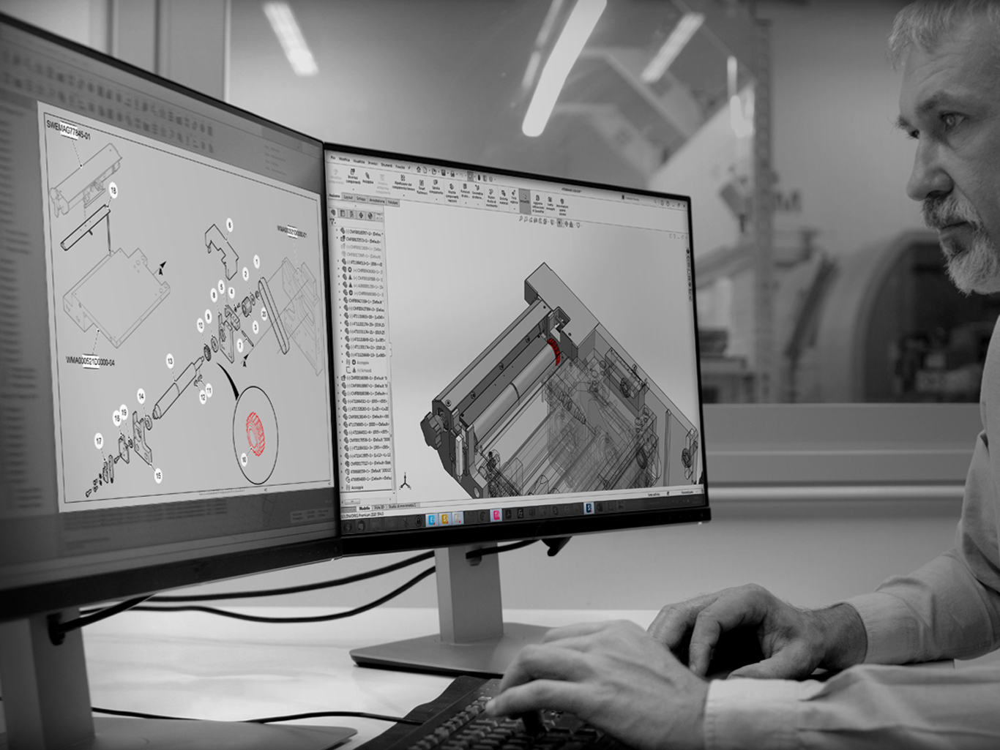

Comunica il valore della tua tecnologia con un approccio specialistico. Realizziamo render 3D, video tecnici, allestimenti e contenuti multimediali per le principali fiere mondiali dell'automazione (Interpack, Cibus Tec, IPACK-IMA). Sviluppiamo portali web e piani editoriali LinkedIn ad alto valore ingegneristico.

Nel settore delle macchine automatiche e della tecnologia industriale, il marketing generico non funziona. I tuoi interlocutori sono Direttori Tecnici, Responsabili R&D, Operation Manager e Buyer che richiedono una comunicazione basata su precisione, rigore e valore ingegneristico.
DUE.ZERO unisce le competenze di Redazione e Ingegneria Tecnica con strategie di Marketing Industriale B2B, aiutando gli OEM a valorizzare il proprio know-how, ingaggiare i Decision Maker e distinguersi nei contesti più competitivi a livello globale.
La partecipazione a fiere internazionali di riferimento come Interpack, Cibus Tec, IPACK-IMA, SPS Smart Production Solutions, K o Fachpack richiede uno sforzo economico e organizzativo rilevante. DUE.ZERO affianca il Costruttore per trasformare lo stand in un'esperienza d'impatto ad alto tasso di conversione commerciale:
Un Costruttore d'eccellenza deve riflettere il proprio livello tecnologico anche sui canali digitali. DUE.ZERO sviluppa e gestisce la presenza online dell'azienda con un focus B2B verticale:
Partendo dai file CAD di progettazione originali, il nostro team grafico crea asset visivi fotorealistici e animazioni 3D che mostrano il funzionamento interno dei cinematismi e dei flussi di processo della macchina, superando i limiti della fotografia tradizionale (specie su impianti ingombranti o in fase di montaggio):